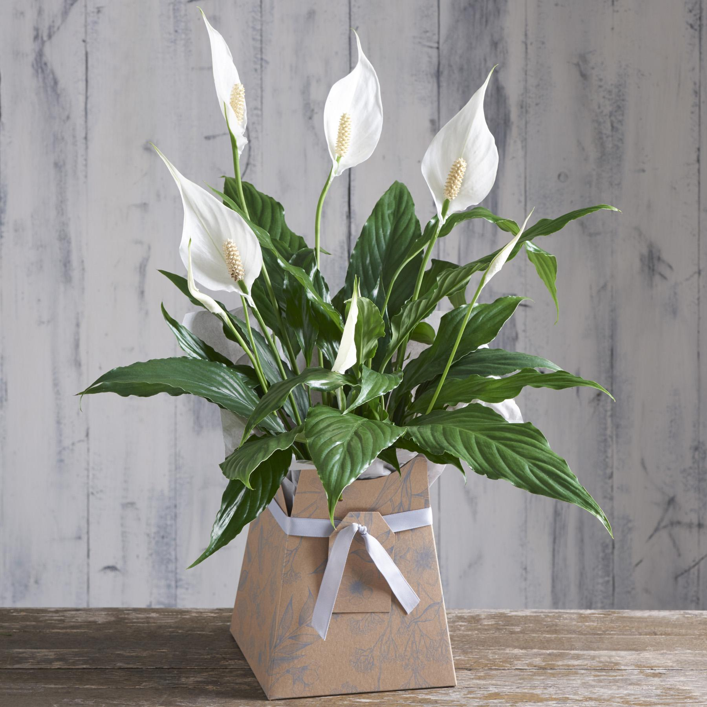

Уход и проблемы выращивания
Уход за спатифиллумом в домашних условиях заключается в следующем:

- поставьте растение на рассеянный свет или в полутень;
- берегите от сквозняков и прямых солнечных лучей;
- подходящая температура для цветка с весны по осень составляет примерно +23–25 °С.
В зимние месяцы она должна быть не ниже +16 °С;
- поливайте по мере просыхания грунта;
- выбирайте невысокий и достаточно тесный горшок, на 1–1,5 см больше корневой системы.
В таких условиях растение не будет тратить силы на заполнение всего объёма корнями.
- используйте подходящие для цветка лёгкие и рыхлые грунты;
- регулярно опрыскивайте и купайте цветок под душем;
- пересаживайте ежегодно весной;
- используйте органо-минеральные удобрения в пропорциях, которые рекомендуют производители.
Вносите их с весны по осень с интервалом в 2–3 недели. Зимние подкормки делайте в дозировке
вдвое меньшей от рекомендованной;